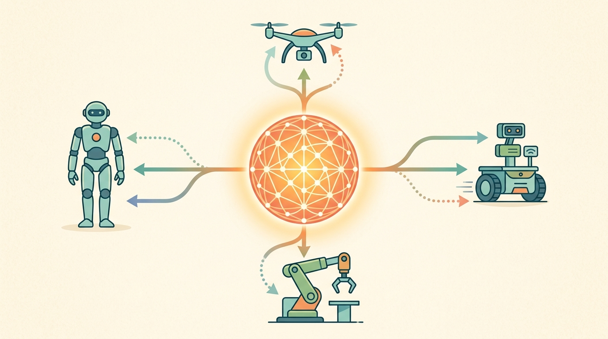

"Every scaling curve is secretly a budget memo with philosophical opinions about openness."
A Research Lead With Spreadsheets

This section builds on the data-scaling intuitions introduced in section 24.1 and the teleoperation quality constraints covered in section 23.6. The open-vs-closed trade-off analysed here is extended in section 35.8, which shows how LoRA fine-tuning changes the economics for open stacks, and in section 52.5, which explains how construct-matched evaluation panels make those trade-offs auditable.
A frontier lab trains a generalist manipulation policy on 10,000 hours of teleoperation data and a cluster of GPUs, achieves state-of-the-art results on its internal benchmark (as of 2024), then publishes the weights behind a research agreement. A university team trains on 400 hours of open data, scores 30 points lower, but ships a fully auditable pipeline that three other groups reproduce in a week. Which program moves embodied AI forward faster? Right now that question is live and unresolved. In this section you will build a concrete lens for comparing data scale, compute budget, and real-world evaluation cost across open and closed stacks, and you will see exactly why the third term, evidence on real hardware, is the one most scaling analyses undercount.
Why Scaling In Robotics Is Different
Buy ten thousand more GPUs and a language model gets smarter overnight. Buy ten thousand more GPUs for a robot policy and the arm still has to physically pick up the cup ten thousand times before you learn anything. That is the central tension Figure 35.6A sets up. Data scale and compute are two of the three forces that drive embodied AI progress. The third one, real-world evidence, is the one most scaling stories undercount. Language models can often scale by adding text and compute while keeping the evaluation channel cheap. Robotics is more stubborn. Each extra demonstration may require hardware time, operators, resets, safety review, and embodiment-specific calibration. A compute-heavy training run can still stall on the cost of generating trustworthy robot data and validating it on real platforms. To make this concrete: a text corpus can grow by one billion tokens overnight via a web crawl. Adding one thousand new robot demonstrations requires booking hardware, scheduling operators, running resets, and reviewing safety logs, which typically takes several weeks for the same order-of-magnitude gain in coverage. To feel the asymmetry directly: a language model that needs 50,000 training examples to learn a new skill can often get by with 300 once cross-task transfer is working. But a robot policy trained on 300 grasping episodes from one arm cannot carry that count to a second arm with a different wrist camera; the team must re-collect most of those episodes from scratch.
This asymmetry sets the tempo of each stack. Closed systems post strong numbers on data and infrastructure no one else can touch. Open stacks trail on headline scores but iterate faster, because the community can debug, fine-tune, and independently validate every step.
For embodied AI, the expensive term is often not only tokens or FLOPs. It is real-world evidence generation.
Checkpoint
So far: robotics scales differently from language modeling because data (D), compute (C), and above all real-world evidence generation (E, the hardware time needed to collect and validate trajectories) are three separate resources with very different costs, and the next section turns that observation into a compact expression you can actually compute with.
A Simple Scaling Lens
If real-world evidence generation is the hidden expensive term, it helps to write down a compact expression that puts that term next to the two everyone already tracks.
A stylized way to think about the trade-off is
$$P \approx f(D, C, E),$$
where \(D\) is data diversity and volume, \(C\) is compute for training and serving, and \(E\) is evaluation throughput on trustworthy scenario panels. Many labs can buy more compute faster than they can buy more credible robot evidence, which means progress saturates on the least glamorous axis.
A more operational view is to treat research throughput as
$$T_{\mathrm{iteration}} \approx \max(T_{\mathrm{data\ prep}}, T_{\mathrm{training}}, T_{\mathrm{hardware\ evaluation}}) + T_{\mathrm{failure\ analysis}}.$$
This decomposition makes the open-versus-closed divide more concrete. A closed stack may lower apparent model-development time because the policy arrives pre-integrated, but it often raises attribution cost because the lab cannot inspect which part of the performance came from data curation, architecture, post-training, teleoperation quality, or evaluation filtering. An open stack may start from a weaker absolute capability level while still producing faster scientific learning because failures are easier to localize and adaptation loops are easier to rerun.
Code Fragment 1 turns this intuition into a toy budget calculation.
# Compare where the budget goes in two robot-foundation-model programs.
programs = {
"open_lab": {"data_hours": 400, "gpu_days": 120, "real_eval_days": 40},
"closed_frontier": {"data_hours": 5000, "gpu_days": 900, "real_eval_days": 120},
}
for name, vals in programs.items():
evidence_pressure = vals["real_eval_days"] / vals["gpu_days"]
print(f"{name}: evidence_pressure={evidence_pressure:.2f}")
open_lab: evidence_pressure=0.33 closed_frontier: evidence_pressure=0.13
The expected output is a higher evidence-pressure ratio for the smaller open program, meaning a larger fraction of its iteration budget is spent on real-world validation instead of pure training throughput. That does not automatically make the open path worse; it often means the lab is paying for more inspectable evidence per unit of model development.
Step-Through: evidence-pressure for two programs
Trace the ratio computation with the actual numbers from Code Fragment 1. The ratio is simply real-evaluation days divided by GPU days, so it measures how much real-world validation each unit of training throughput is forced to carry.
Open lab. real_eval_days = 40, gpu_days = 120. Ratio = 40 / 120 = 0.333, which rounds to 0.33. Read it as: for every day of GPU training, the program spends a third of a day validating on real hardware.
Closed frontier. real_eval_days = 120, gpu_days = 900. Ratio = 120 / 900 = 0.133, which rounds to 0.13. Even though the closed program runs 3x more absolute evaluation days (120 vs 40), its 7.5x larger compute budget (900 vs 120) dilutes the ratio to less than half the open lab's value.
The takeaway from the numbers. 0.33 vs 0.13 is not a quality verdict. It says the open lab buys more inspectable real-world evidence per unit of model development, while the closed program's pressure ratio of 0.13 sits dangerously close to the 0.10 threshold from the tip callout below, where sim-to-real assumptions start doing unaudited work.
When your program's evidence_pressure ratio falls below 0.10, treat it as a signal that sim-to-real transfer assumptions are doing unaudited work. Before the next training run, add at least one LeRobot EpisodeReplayBuffer validation pass on held-out hardware trajectories so that real-embodiment failures surface before, not after, a multi-day GPU job completes. (LoRA here refers to Low-Rank Adaptation, the parameter-efficient fine-tuning method discussed in section 35.8.) Catching a sensor-timing mismatch at this stage costs one afternoon; catching it post-training costs the entire compute budget and a reset of the data collection schedule.
Open stacks such as LeRobot, OpenVLA, openpi, SmolVLA, Hugging Face Hub, and ONNX Runtime (Open Neural Network Exchange Runtime, a cross-platform inference engine) reduce the cost of experimentation by standardizing datasets, training recipes, checkpoint exchange, and evaluation exports. The main payoff is not only convenience. It is that more of the lab's budget can go toward real validation instead of custom infrastructure glue.
Mechanisms Behind The Cost Curve
The budget lens tells us where the money goes, but to see why open and closed stacks respond so differently to that spending we have to look under the ratio at the mechanisms that turn data and compute into policy performance.
Data scale matters in at least three different ways: the number of embodiments represented, the diversity of tasks and scenes, and the quality of state-action alignment inside each trajectory. Compute interacts with those axes asymmetrically. More FLOPs can help fit larger mixtures or more expressive action models, but they cannot repair missing calibration metadata, poor reset discipline, or under-specified action semantics.
This is where the open and closed worlds diverge mechanistically. Open stacks usually expose dataset schema, action conventions, and training code, so their common failure mode is limited scale or uneven embodiment coverage. Closed stacks may demonstrate stronger integrated performance, but their common scientific weakness is that the source of the gain becomes entangled with private data mixtures, private evaluation filters, and hidden post-training procedures.
Attribution entanglement works like eating a stew someone else cooked: the flavour is there, but you cannot taste the salt separately from the stock, or the stock separately from the browning time. If the dish turns out wrong, you cannot fix just one ingredient because you cannot isolate which one matters. A closed model's performance gain is the same kind of stew: data curation, architecture choices, post-training, and evaluation filters all dissolve into a single score, and adjusting any one component requires re-cooking the whole pot from scratch.
A common failure in scaling robot foundation models is confusing training-set breadth with deployment robustness. A model trained on 1,000 hours of teleoperation data across 10 embodiments may still fail immediately when placed on an eleventh robot with a slightly different end-effector mass or camera mounting angle, because the scaling happened along the task axis rather than the calibration axis. More data does not help if the new embodiment's sensor-action timing falls outside the distribution of recorded trajectories. This failure is especially hard to diagnose in closed stacks where the training manifest is not visible.
Algorithm: Open-vs-Closed Stack Selection Checklist
Input: Research program goals \(G\), iteration budget \(B = (B_{\mathrm{data}}, B_{\mathrm{compute}}, B_{\mathrm{eval}})\), target policy \(\pi\), and a set of candidate base models \(\mathcal{M} = \{m_1, m_2, \ldots\}\) partitioned into open (\(\mathcal{M}_o\)) and closed (\(\mathcal{M}_c\)) subsets.
Output: Stack selection decision \(s^* \in \{\mathrm{open}, \mathrm{closed}, \mathrm{hybrid}\}\) with a justification record and an evidence-pressure target \(\hat{E}\).
- Compute the evidence-pressure ratio for each candidate: \(\hat{E}_m = B_{\mathrm{eval}} / B_{\mathrm{compute}}\). Flag any \(m\) with \(\hat{E}_m < 0.10\) as under-validated and require a real-hardware replay pass before proceeding.
- For each \(m \in \mathcal{M}_o\), inspect the dataset schema and action convention. Confirm that the new task's state space \(\mathcal{S}_{\mathrm{new}}\) is covered by the training manifest; if not, record the coverage gap \(\delta_\mathcal{S} = |\mathcal{S}_{\mathrm{new}} \setminus \mathcal{S}_{\mathrm{train}}|\).
- For each \(m \in \mathcal{M}_c\), assess attribution risk: can the performance gain be decomposed into data curation \(\Delta_D\), architecture \(\Delta_\theta\), and post-training \(\Delta_{\mathrm{PT}}\) components? If all three are opaque, mark attribution risk as high.
- Estimate fine-tuning cost for the open path using the LoRA parameter count \(|\theta_{\mathrm{LoRA}}| \ll |\theta|\) and a single-GPU A100 day baseline. Estimate vendor API cost for the closed path from published pricing and required call volume.
- Evaluate failure localizability: define \(L(\pi) = 1\) if the stack allows checkpoint diffing and log export, \(L(\pi) = 0\) otherwise. Prefer \(L(\pi) = 1\) whenever \(G\) includes ablation studies or curriculum design.
- Check replication speed: can an independent lab reproduce the result within the same \(B_{\mathrm{eval}}\) budget without access to private data? Record replication feasibility as \(R \in \{0, 1\}\).
- Score each candidate: \(\sigma(m) = w_1 \hat{E}_m + w_2 L(\pi) + w_3 R - w_4 \delta_\mathcal{S}\), with weights \(w_1, w_2, w_3, w_4 > 0\) set by program priorities (auditability-heavy vs. peak-capability-heavy).
- Select \(s^* = \arg\max_m \sigma(m)\). If the top scorer is closed but \(L(\pi) = 0\) and \(G\) requires ablations, override to hybrid: use the closed model as a reference ceiling and an open model as the adaptation substrate.
- Record the selection in the experiment registry: stack name, \(\hat{E}\) target, attribution risk level, and the one failure mode the team will monitor first (e.g., sensor-timing mismatch, action-convention drift, or evaluation filter opacity).
- Before each new training run, recheck \(\hat{E}\). If it has dropped below the target, pause compute spend and run at least one embodiment-validated replay pass to prevent unaudited sim-to-real assumptions from accumulating in \(\theta\).
Open Versus Closed Is A Research Trade-Off
| Dimension | Open stack | Closed stack |
|---|---|---|
| Auditability | High: interfaces, datasets, and code can often be inspected | Low to medium: strongest details may remain vendor-private |
| Fine-tuning accessibility | High for community hardware and small labs | Usually limited to demos or narrow partner programs |
| Peak capability | May lag frontier reports | May lead on headline demonstrations |
| Replication speed | Fast once artifacts are published | Slow if key ingredients are inaccessible |
| Learning value | Excellent for understanding full pipelines end to end | Useful for frontier awareness and architecture study |
| Attribution of gains | Usually easier to localize to data, adapters, or training recipe | Often confounded by private data mixtures, curation rules, and evaluation infrastructure |
| Failure analysis depth | High when logs, schemas, and checkpoints are exported | Often shallow if only demos or aggregate metrics are visible |
A common assumption is that the open-vs-closed divide is fundamentally about capability, treating closed systems as strictly superior and open systems as budget compromises that converge to the same endpoint once resources increase. In embodied AI this framing is wrong because the divide is primarily about iteration speed, failure localizability, and what kind of scientific claim a result can support. A closed model with a stronger aggregate score may still be a weaker research instrument if the team cannot determine whether the gain came from data curation, architecture, post-training, or evaluation filtering. The correct mental model treats open and closed stacks as tools optimized for different objectives: closed stacks maximize headline capability per demo, while open stacks maximize the rate at which a team can localize failures, attribute gains, and produce reproducible evidence on real hardware.
Consider a specific case: a lab wants to adapt a pretrained policy to a new tabletop manipulation task. If the base model is open (say, OpenVLA or SmolVLA on LeRobot), the team can inspect the action tokenization scheme. That scheme maps continuous joint angles or end-effector deltas into discrete vocabulary tokens the language backbone can consume. The team confirms that the new task's state space is covered, runs a LoRA fine-tune in a day on a single A100, and pinpoints regressions by diffing the checkpoint against the pretrained weights. Action tokenization matters physically because bin boundaries set the finest motion the policy can express. Coarse bins force jerky, quantization-clipped trajectories on joints that need sub-millimeter precision. Overly fine bins inflate the vocabulary and destabilize training on small datasets. The scheme discretizes each action dimension into \(K\) uniform or learned bins, appends those token ids to the language context, and trains the model to predict them autoregressively. The policy inherits the backbone's context-window and sampling machinery at the cost of treating motion as vocabulary. If the base model is closed, the team must use a vendor fine-tuning API, accept opaque action conventions, and read results only through the aggregate metrics the vendor returns. The open path takes longer to reach the vendor's peak capability, but the team knows exactly why each failure occurs and can fix it. This distinction matters most during the debugging phase, not the demo phase.
Evaluation Consequences
Because that debugging advantage lives entirely in what the team can inspect, the stack decision does not just change how fast a lab iterates; it changes what kind of scientific claim its evaluations can support at all.
The choice of stack changes what kind of science a lab can do. Closed systems such as GR00T N1.5 are useful as frontier capability references, but they are weak substrates for ablations that isolate physical causes: if a Franka Panda wrist camera mounted 2 cm off-nominal degrades grasp success from 87% to 61%, a closed stack cannot tell you whether the loss traces to the visual encoder, the action tokenizer, or a training-set bias toward cameras mounted flush with the end-effector plate. Open systems such as OpenVLA or SmolVLA on LeRobot expose the action tokenization scheme and the trajectory schema, so the team can diff the failing episode against the nearest training neighbor, check whether the off-nominal camera pose falls outside the \(\pm\)5 mm mounting-offset distribution recorded in the dataset manifest, and rerun a single LoRA fine-tune with augmented viewpoints rather than re-collecting thousands of demonstrations.
A model that scores well on a benchmark no one else can run is not a result; it is a private opinion about performance.
The minimum reproducible evidence bundle
The minimum evidence bundle for a reproducible scaling claim must include one construct-matched task panel run on physical hardware with embodiment labels (robot model, end-effector serial number, controller firmware version), dataset provenance (which Open X-Embodiment or LeRobot split was used), the training or fine-tuning config including LoRA rank and learning rate, per-joint latency notes (a 15 ms spike on the Franka wrist joint during high-torque grasps shifts the action distribution in ways that aggregate success-rate metrics hide), and a failure taxonomy keyed to physical cause (contact slip, sensor dropout, out-of-distribution lighting) saved in the same artifact. Without that bundle, a stronger demo may still be a weaker scientific claim.
An open model that a community can fine-tune, probe, and reproduce may generate more durable scientific progress than a closed model with better demos but thinner audit trails.
A small research group choosing between SmolVLA on LeRobot data and a vendor API should ask a blunt question: which path gets us to a reproducible adaptation, a fair evaluation panel, and a clear failure taxonomy within our actual budget? The answer is often the open path, even if the vendor demo looks stronger today.
Real-World Application: open robot foundation models at Hugging Face
The LeRobot project operationalizes exactly this open-vs-closed trade-off: it ships SmolVLA, standardized Open X-Embodiment dataset splits, training recipes, and checkpoint exchange so that small labs spend budget on real-hardware validation rather than custom infrastructure glue. Because the action tokenization scheme and trajectory schema are inspectable, an independent group can diff a failing episode against its nearest training neighbor and rerun a single LoRA fine-tune, turning a vendor-opaque regression into a localizable, fixable one.
Some research programs scale like rockets. Others scale like moving a couch up the stairs. Robot data collection is usually the couch.
Lab: Measuring where the budget actually goes
Goal: Feel the asymmetry between cheap compute and scarce real-world evidence by computing and plotting the evidence-pressure ratio across a sweep of program budgets.
Tools needed: Python with NumPy and Matplotlib; optionally the lerobot package and the Hugging Face Hub to pull a real dataset card for grounding your budget numbers. No GPU or robot required.
Steps and what to vary: (1) Reuse the programs dictionary from Code Fragment 1 and wrap the ratio computation real_eval_days / gpu_days in a function. (2) Build a grid: hold real_eval_days fixed at 40 and sweep gpu_days from 50 to 1000 in steps of 50, then repeat holding gpu_days fixed and sweeping real_eval_days. (3) Plot evidence pressure against each swept axis and draw a horizontal line at the 0.10 threshold from the tip callout.
What to observe: Notice how easily the ratio crashes below 0.10 when you scale compute alone while holding evaluation fixed: doubling GPU days halves the pressure ratio. That is the section's core claim made empirical: buying compute is cheap, so without deliberately budgeting real-evaluation days the program drifts into the under-validated regime where sim-to-real assumptions go unaudited.
If you had to cut one budget line tomorrow, which would damage the program more: data collection, GPU time, or real-world evaluation? Your answer reveals the true bottleneck of the project.
Synthetic data pipelines for robot pretraining (2024-2026). Labs are now generating large-scale robot trajectory datasets inside physics simulators and using them to pretrain or distill open policies, bypassing the teleoperation bottleneck at the cost of a harder sim-to-real transfer problem. Google DeepMind's RT-X and the subsequent RoboVerse project (2025) are representative; RoboVerse curates a unified simulation-to-real transfer benchmark across more than 20 environments to measure how much synthetic scale actually helps on physical hardware.
Compute-efficient open adaptation via distillation and structured pruning (2024-2026). Rather than training from scratch, recent work compresses frontier closed models into open, deployable policies that fit on edge hardware. Hugging Face's SmolVLA (2025) and the broader model-distillation thread in the LeRobot ecosystem illustrate how structured pruning and layer-wise distillation can close a large fraction of the capability gap at a fraction of the original compute budget.
Trustworthy evaluation as a first-class research problem (2025-2026). A growing line of work argues that the field lacks standardized, hardware-grounded benchmarks that are immune to evaluation-filter gaming. The GROOT Bench effort (NVIDIA, 2025) and the dexterous-manipulation benchmarking track at CoRL 2025 both treat construct-matched, embodiment-labeled evaluation as a research contribution independent of any particular policy architecture.
Open problem for PhD students. There is currently no agreed method for measuring how much of a robot foundation model's benchmark gain traces to data curation choices versus architecture changes versus post-training procedures when at least one of those factors is opaque. A tractable project: design an open ablation protocol that holds architecture and post-training fixed while varying only the data mixture ratio across Open X-Embodiment splits, run it on a reproducible open stack (SmolVLA or OpenVLA-OFT), and produce a factor-attribution estimate with confidence intervals derived from at least three hardware evaluation runs. The bottleneck is not the compute; it is defining a failure-cause taxonomy granular enough to separate data-driven failures from calibration-driven ones on real robots.
Data scale and compute matter, but embodied AI progress is governed just as much by who can afford to generate and verify real behavior. Openness changes that equation.
Write a one-page budget memo for an open robot-foundation-model project. Include planned data sources, compute budget, real-evaluation budget, and one reason the open stack would speed up or slow down the research cycle.
Project Ideas
Beginner (weekend): Build an evidence-pressure dashboard in Python using Gymnasium and a toy teleoperation log: simulate two programs (one open, one closed) by generating synthetic episode records, compute the evidence-pressure ratio from Code Fragment 1 for each, and plot how the ratio shifts as you vary real-evaluation budget. The key challenge is choosing realistic budget distributions so the ratio meaningfully separates the two stack types rather than collapsing to the same value.
Intermediate (1-2 weeks): Fine-tune SmolVLA on a LeRobot tabletop-manipulation split using LoRA, then evaluate the adapted policy inside MuJoCo with a second robot embodiment that differs only in end-effector mass, and record per-episode failure causes (contact slip, out-of-distribution camera pose, action-quantization error) in a structured log. The key challenge is constructing a construct-matched evaluation panel across the two embodiments so that performance differences trace to the mass mismatch and not to scene variation or evaluation-filter differences.
What's Next?
Section 35.7 closes the chapter by asking what still breaks even after all these design choices, and which open questions are still blocking truly general robot foundation models.
Hugging Face (2025). "SmolVLA."
A strong reference for affordable training and deployment on community-accessible hardware.
Useful for understanding how open infrastructure reduces the cost of working with robot datasets and pretrained policies.
NVIDIA Research. "GR00T N1.5."
Relevant as a frontier capability report when thinking about the current closed or semi-closed side of the field.